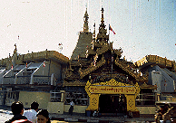
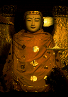

スーレーパゴダ/ヤンゴン
SulePagoda/YANGON
|

|

|
ヤンゴンのヘソ、スーレーパゴダ。かつて英国人がここを中心のロータリーとし、そこからヤンゴンの都市計画を始めたのだから中心地なのは当たり前。
現在も周りにはたくさんの商店や屋台が並び大勢の人が集まり賑わっている。
そしてこの近くには市庁舎や最高裁判所などの英国様式建築がズラ〜っと並びかつての旧宗主国英国のやんちゃぶりが偲ばれる。それらにたった一本で対峙するスーレーパゴダ、頼もしい限りである。
もっともあんな英国のチンピラ建築なんぞいくら束になってもパゴダの金ぴかの塔一本には到底かなわないけどね。
パゴダは車やバイクがぶんぶん走るロータリーの中、参拝も命懸けざんす。
境内は外の喧騒とは別世界。参拝のみなさんは自分のお好みのスペースを見つけてはあちらこちらで瞑想中。
あ、そのまま睡眠モードに突入している人も・・・
スーレーパゴダも改装中。というわけでここにもありました。自動金箔奉納装置。しかしさすがはヤンゴンの中心、ここのはウインチ付でより多くの金箔を輸送出来るようになっている。でも、やっぱり自分で綱曵いた方が有難味があると思うんですけど・・・
次のスポットへGO!
ミャンマーパゴダ列伝のページへ
珍寺大道場 HOME